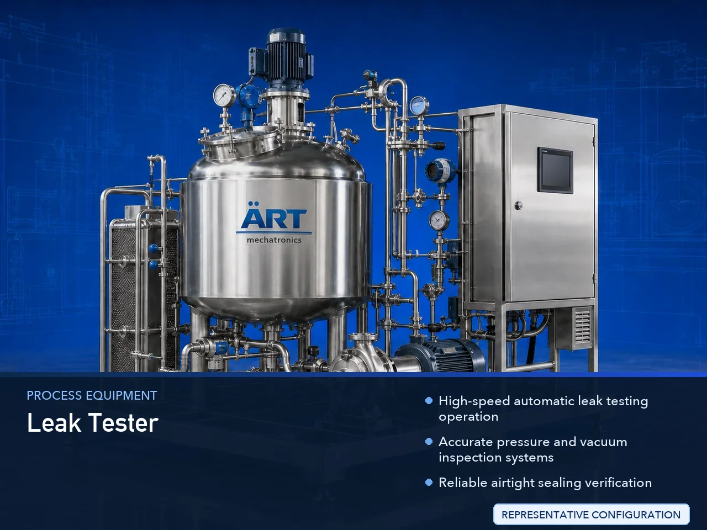

Leak Tester Machine for Cans & Jars (Automatic Container Leak Detection System)
A Leak Tester Machine for Cans & Jars, also known as a Container Leak Testing Machine, Can Leak Detector, Jar Leak Testing System, or Automatic Packaging Leak Inspection Machine, is an advanced industrial quality control solution designed for automatic leak detection, pressure testing, vacuum…

About the Leak Tester
Leak testing systems are widely used for: ✔ Tin can leak testing ✔ Jar seal inspection ✔ Airtight container testing ✔ Vacuum seal inspection ✔ Beverage can leak detection ✔ Food packaging inspection ✔ Cosmetic container testing ✔ Pharmaceutical packaging quality control
The machine improves: ✔ Packaging quality assurance ✔ Airtight sealing verification ✔ Product safety ✔ Shelf life protection ✔ Leakage prevention ✔ Production efficiency ✔ Brand reliability
Industrial leak tester machines use: ✔ Servo synchronized conveyor systems ✔ PLC and HMI automation controls ✔ Precision pressure and vacuum testing systems ✔ Sensor-based leak detection technology ✔ Automatic rejection systems
to automatically inspect and detect leaking containers with superior accuracy and high production efficiency.
Leak tester machines for cans and jars are widely used in industries such as:
Food processing industries Beverage industries Pharmaceutical industries Cosmetic industries Tea industries Coffee industries Spice industries FMCG industries
where airtight packaging, leak-proof sealing, and contamination-free packaging are essential.
The machine is highly suitable for: ✔ Tin can leak detection ✔ Jar seal inspection ✔ Vacuum package testing ✔ Beverage can inspection ✔ Food container quality control ✔ Cosmetic jar leak testing
ART Mechatronics offers high-performance leak tester machines for cans & jars, engineered for continuous industrial operation, accurate leak detection performance, hygienic inspection quality, and reliable long-term packaging automation.
Working Principle of Leak Tester Machine
- 1. Filled Container Feeding Filled cans or jars are automatically fed into testing section through synchronized conveyor systems.
- 2. Leak Testing Process Machine automatically checks containers using: ✔ Pressure testing ✔ Vacuum testing ✔ Sensor-based inspection ✔ Seal integrity verification
Servo synchronization ensures smooth container movement and accurate testing performance.
- 3. Leak Detection Operation Machine handles: ✔ Tin cans ✔ Metal containers ✔ Glass jars ✔ PET jars ✔ Beverage containers ✔ Food jars ✔ Cosmetic containers
accurately and continuously.
- 4. Defect Detection & Rejection Process Machine performs: Leak detection Seal inspection Fault identification Automatic rejection of defective containers
for reliable packaging quality assurance.
- 5. Inspection & Automation Integration Optional systems include: Vision inspection Barcode verification Batch coding inspection Data logging systems Production monitoring systems
- 6. Finished Container Discharge Approved containers discharged automatically for: Cartoning Case packing Retail distribution Export shipment handling
Types of Leak Tester Machines
- 1. Vacuum Leak Testing Machine Designed for: ✔ Vacuum-packed food and beverage packaging applications
- 2. Pressure Leak Testing Machine Suitable for: ✔ Airtight container inspection systems
- 3. Can Leak Detector Machine Uses: ✔ Tin and metal can packaging inspection systems
- 4. Jar Seal Testing Machine Designed for: ✔ Glass and PET jar packaging inspection systems
- 5. Servo Driven Leak Tester Machine Suitable for: ✔ Precision high-speed inspection operations
- 6. Fully Automatic Leak Detection System Designed for: ✔ Complete industrial packaging quality control automation lines
Industries Using Leak Tester Machines
🍃 Food Processing Industry Processed foods, ingredients, snacks, and airtight food packaging inspection systems. 🥤 Beverage Industry Soft drinks, juices, syrups, and beverage can leak testing systems. 💊 Pharmaceutical Industry Medicine container and healthcare packaging inspection systems. 🧴 Cosmetic Industry Cream jars, lotion containers, and personal care packaging leak testing systems. 🌶️ Spice Industry Masala products, seasoning products, and spice jar sealing inspection systems. 🛒 FMCG Industry Retail packaging container and product packaging quality inspection systems.
Features & Advantages
✔ High-speed automatic leak testing operation ✔ Accurate pressure and vacuum inspection systems ✔ Reliable airtight sealing verification ✔ PLC and servo automation control systems ✔ Improves product safety and shelf life ✔ Reduces packaging failures and product leakage ✔ Supports multiple container sizes and formats ✔ Reliable long-term industrial performance ✔ Smooth and continuous packaging line integration
Technical Highlights
Machine Type: Automatic leak tester machine Industrial container inspection system Packaging quality control machine Container Type: Tin cans Metal containers Glass jars PET jars Food-grade containers Testing Integration: Vacuum testing systems Pressure testing systems Sensor-based leak detection systems Features: PLC control system Servo synchronization Touchscreen HMI Automatic rejection system Data monitoring integration Applications: Food containers Beverage cans Pharma jars Cosmetic packaging Retail containers Automation: Semi-automatic Fully automatic industrial systems
Turnkey Leak Testing Solutions
ART Mechatronics offers: Complete leak testing systems Automatic container inspection solutions Packaging automation integration systems Conveyor synchronization systems Installation & commissioning After-sales service & AMC
Why Choose Art Mechatronics
Expertise in industrial packaging and automation systems Customized leak testing solutions for multiple industries High-performance and accurate inspection technology Advanced PLC and servo automation systems Proven industrial packaging performance across sectors
Applications
Food Processing Industries Beverage Manufacturing Plants Pharmaceutical Packaging Units Cosmetic Manufacturing Facilities Spice Packaging Industries FMCG Packaging Plants
Related Process Equipment machines
Get pricing & specs for the Leak Tester
Share the product, target capacity, current process and plant location. These details help our engineers discuss the right machine or line configuration.
One partner, from design to start-up
ART Mechatronics designs, manufactures, installs and commissions your Leak Tester solution with regional presence in India, UAE and Thailand.